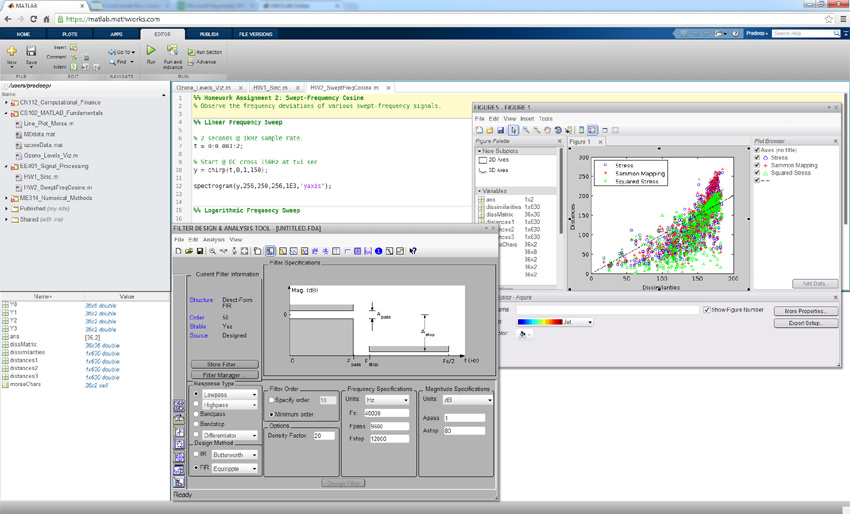
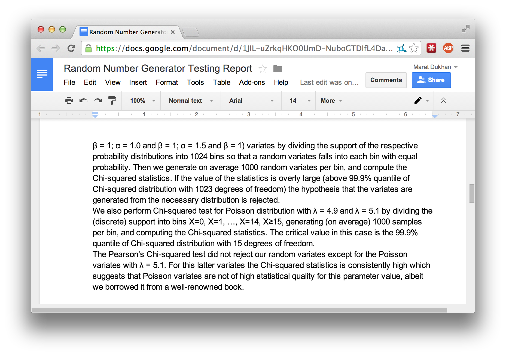
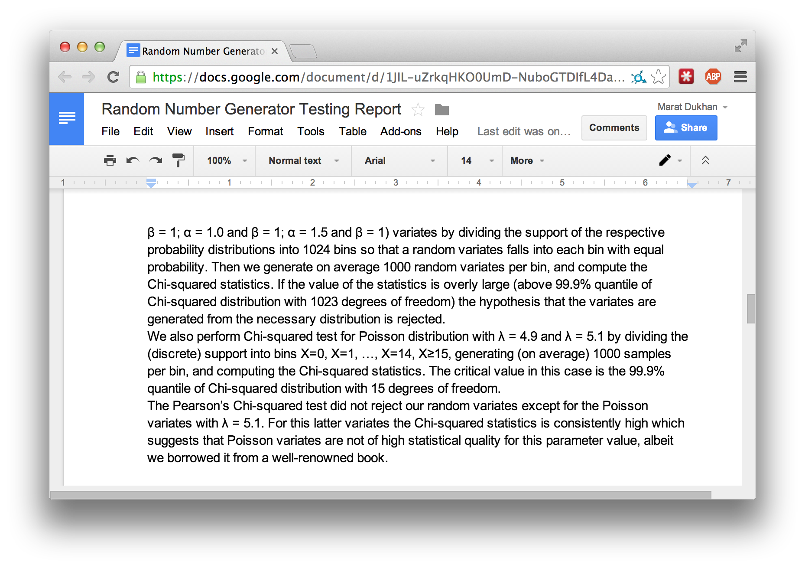

Atwood's Law: any application that can be written in JavaScript, will eventually be written in JavaScript
Scientific Computing Applications on the Web

Challenges
Performance
Multi-core parallelisation
SIMD and FMA instruction sets
Offloading computations to GPGPU
Integration with JavaScript
JavaScript API
Non-blocking interface
Interactive computing
Computing on the Web
JavaScript
Web Workers
Asm.js
Native Client (NaCl)
Portable Native Client (PNaCl)
ParallelJS (River Trail)
WebCL
Furious.js API: Context Initialization
/* Initialization with default parameters */
furious.init(function(context) {
/* Compute using context */
compute(context);
});
/* Initialization with specific parameters */
var options = { "device": "dGPU" };
furious.init("webcl", options, function(context) {
/* Compute using WebCL dGPU context */
compute(context);
});
Creating NDArrays
var a = context.array([[1, 3, 5, 7],
[2, 4, 6, 8]],
new furious.DataType("f32"));
var b = context.ones([5, 5]);
var c = context.linspace(0, 1, 100);
The API is similar to NumPy, e.g.
a = numpy.array([[1, 3, 5, 7],
[2, 4, 6, 8]]], numpy.float32)
b = numpy.ones([5, 5])
c = numpy.linspace(0, 1, 100)
Arithmetics on NDArrays
var a = ..., b = ...;
/* Array addition */
var c = a.add(b);
/* Multiplication by constant */
var d = a.mul(Math.PI);
/* Divide constant by array elements */
var e = context.div(10.0, a);
/* Exponentiate all elements */
var f = context.exp(a);
/* Square root of all elements */
var g = context.sqrt(a);
More arithmetic operations
/* Array minimum, maximum, sum */
var m = a.min(), M = a.max(), s = a.sum();
/* Array reduction along an axis */
var am = a.min(0);
/* Dot product */
var c = context.dot(a, b);
/* Cholesky decomposition */
var l = context.cholesky(a, "L");
var u = context.cholesky(a, "U");
/* Forward and backward substitution */
var x = context.solveTridiagonal(l, y, "L");
var X = context.solveTrigiagonal(l, Y, "L", "T");
 
